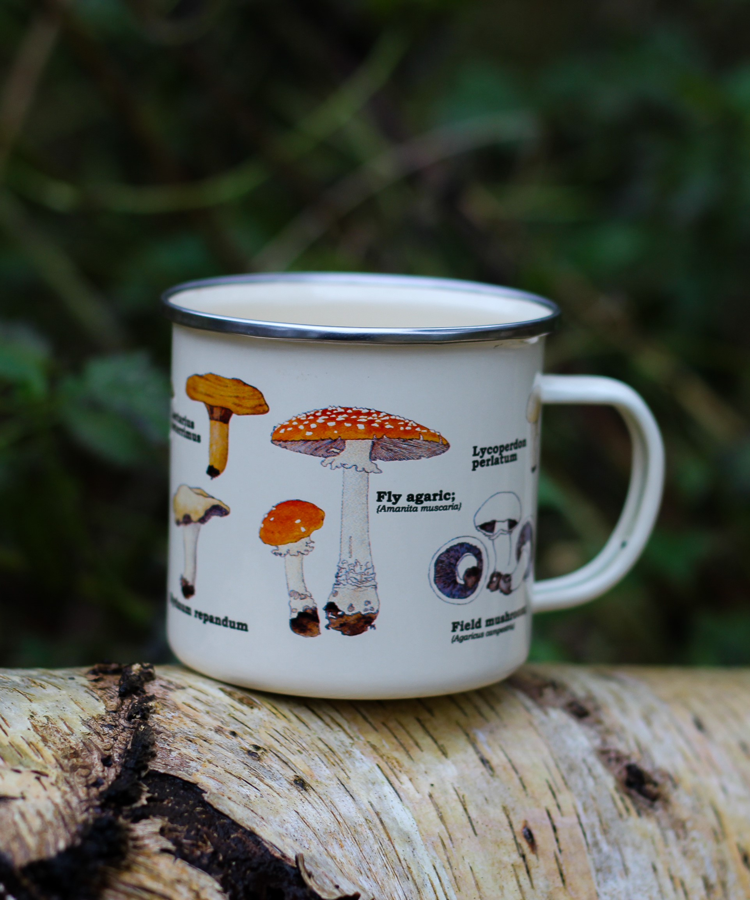

Projekter
Igennem min uddannelse har jeg lavet mange forskellige projekter som alle har være spændende og udfordrende. Jeg har stiftet kendskab til webdesign, programmering og kodning, fotografering og grafisk design. Nedenunder ses en blanding af private projekter jeg selv har skabt, samt nogle skolerelaterede projekter jeg har været en del af.


Magasin
Produktbillede i studie
Redesign af hjemmesiden Fyns Antikvariat

Produktbillede i naturen
Grafiske illustrationer
Logo design